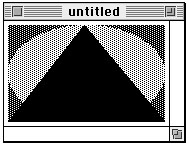

A Sample Extended Version 2 Picture
The chapter "Pictures" in this book describes how to use theOpenCPicturefunction to create and display extended version 2 pictures. Listing A-4 illustrates how to useOpenCPicture.Listing A-4 Creating and drawing an extended version 2 picture
FUNCTION MyCreateAndDrawPict(pFrame: Rect): PicHandle; VAR myOpenCPicParams: OpenCPicParams; myPic: PicHandle; trianglePoly: PolyHandle; BEGIN WITH myOpenCPicParams DO BEGIN srcRect := pFrame; hRes := gHRes; {$00480000 for 72 dpi} vRes := gVRes; {$00480000 for 72 dpi} version := - 2; {always set this field to -2} reserved1 := 0; {this field is unused} reserved2 := 0; {this field is unused} END; myPic := OpenCPicture(myOpenCPicParams); {start creating the picture} ClipRect(pFrame); {always set a valid clip region} FillRect(pFrame,dkGray); {create a dark gray rectangle for background} FillOval(pFrame,ltGray); {overlay the rectangle with a light gray oval} trianglePoly := OpenPoly; {start creating a triangle} WITH pFrame DO BEGIN MoveTo(left,bottom); LineTo((right - left) DIV 2,top); LineTo(right,bottom); LineTo(left,bottom); END; ClosePoly; {finish the triangle} PaintPoly(trianglePoly); {paint the triangle} KillPoly(trianglePoly); {dispose of the memory for the triangle} ClosePicture; {finish the picture} DrawPicture(myPic,pFrame); {draw the picture} MyCreateAndDrawPict := myPic; END;Figure A-1 shows the picture created by Listing A-4.
The QuickDraw drawing commands issued betweenOpenCPictureand theClosePictureprocedure in Listing A-4 are saved in memory as aPicturerecord containing apicSizefield, apicFramefield, and an array of picture opcodes; an application can also save this information in a resource of type'PICT'. TheDrawPictureprocedure reads these opcodes when drawing the picture.For debugging purposes, you might find it helpful to examine the opcodes for a picture. Listing A-5 shows the extended version 2 picture in Figure A-1 after it is saved in a
'PICT'resource and then decompiled with the DeRez decompiler.Listing A-5 A decompiled extended version 2 picture
data 'PICT' (128) { $"0078" /* picture size; don't use this value for picture size */ $"0000 0000 006C 00A8" /* bounding rectangle of picture at 72 dpi */ $"0011" /* VersionOp opcode; always $0011 for extended version 2 */ $"02FF" /* Version opcode; always $02FF for extended version 2 */ $"0C00" /* HeaderOp opcode; always $0C00 for extended version 2 */ /* next 24 bytes contain header information */ $"FFFE" /* version; always -2 for extended version 2 */ $"0000" /* reserved */ $"0048 0000" /* best horizontal resolution: 72 dpi */ $"0048 0000" /* best vertical resolution: 72 dpi */ $"0002 0002 006E 00AA" /* optimal source rectangle for 72 dpi horizontal and 72 dpi vertical resolutions */ $"0000" /* reserved */ $"001E" /* DefHilite opcode to use default hilite color */ $"0001" /* Clip opcode to define clipping region for picture */ $"000A" /* region size */ $"0002 0002 006E 00AA" /* bounding rectangle for clipping region */ $"000A" /* FillPat opcode; fill pattern specified in next 8 bytes */ $"77DD 77DD 77DD 77DD" /* fill pattern */ $"0034" /* fillRect opcode; rectangle specified in next 8 bytes */ $"0002 0002 006E 00AA" /* rectangle to fill */ $"000A" /* FillPat opcode; fill pattern specified in next 8 bytes */ $"8822 8822 8822 8822" /* fill pattern */ $"005C" /* fillSameOval opcode */ $"0008" /* PnMode opcode */ $ "0008" /* pen mode data */ $"0071" /* paintPoly opcode */ $"001A" /* size of polygon */ $"0002 0002 006E 00AA" /* bounding rectangle for polygon */ $"006E 0002 0002 0054 006E 00AA 006E 0002" /* polygon points */ $"00FF" /* OpEndPic opcode; end of picture */ }